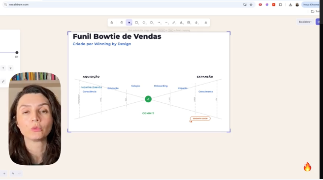
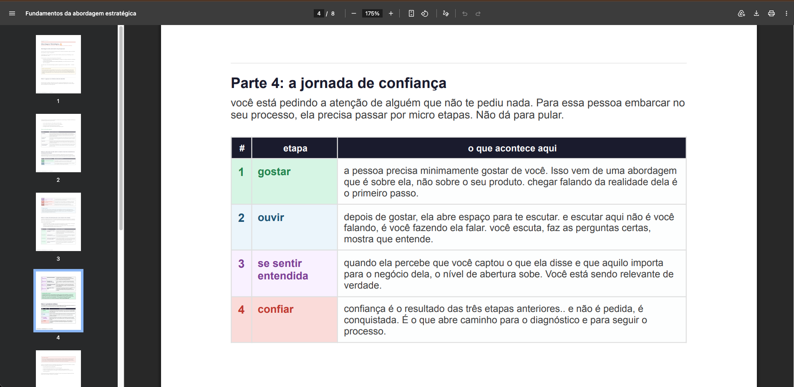
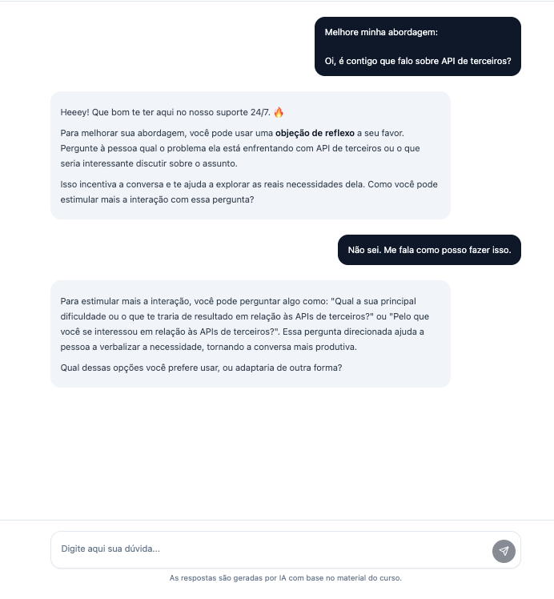
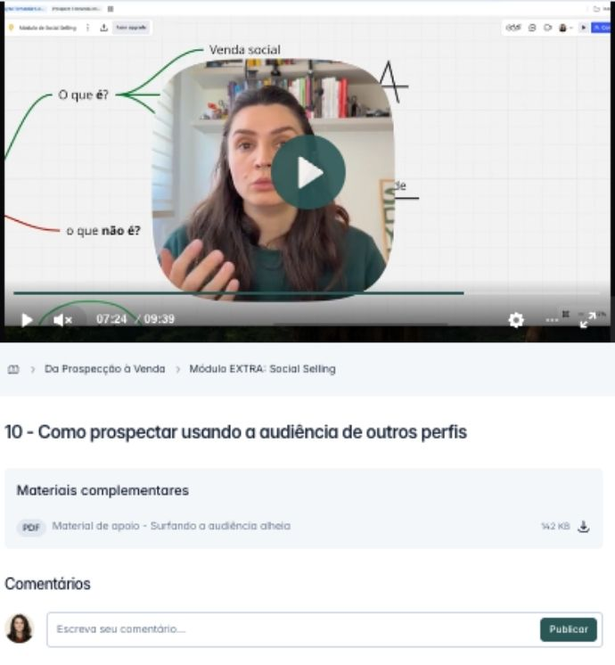
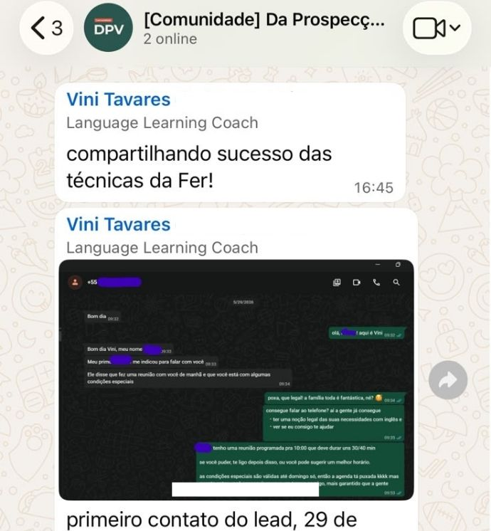

Conteúdo do produto
Tudo o que você vai encontrar dentro do Da Prospecção à Venda
Aulas práticas, direto ao ponto, com material de apoio cheio de exemplos e exercícios pra você aplicar no seu contexto.
1 O método e a mentalidade de quem performa +
Formando a base sólida da prospecção e venda estratégica
Mentalidade de quem tem sucesso na prospecção
Framework EPPA: Estudo, Preparação, Personalização e Ação
Blocos de atividade e produtividade
Como ter a mentalidade blindada?
2 Inteligência: entenda seu mercado, cliente e oferta +
O mapa completo: da prospecção à venda (funil ampulheta)
Fundamentos da jornada de venda
Para quem você vende? (ICP e Persona)
Onde encontrar o seu potencial cliente (criação de lista)
3 Prospecção, cadência e abordagem +
Introdução à prospecção estratégica
O que é uma cadência e como montar uma do zero
Fundamentos da abordagem estratégica
Como usar a pesquisa (personalização, relevância e gatekeeper)
Exemplos de abordagem estratégica
Como contornar objeções
4 Diagnóstico: a habilidade mais importante do vendedor +
Fundamentos do diagnóstico
Estruturando sua reunião de diagnóstico (parte 1 e 2)
Follow-up: como fazer do jeito certo
5 Fechamento: da proposta ao contrato assinado +
Fundamentos da demonstração
Erros clássicos e estrutura correta da demonstração
Negociação na prática (descontos, condições e mais)
Boas práticas no fechamento da venda
Formalizando sua proposta comercial

Aulas em vídeo, diretas ao ponto

Material de apoio com exemplos e exercícios
E ainda: 3 bônus pra acelerar seu resultado
IA exclusiva de vendas
Uma inteligência artificial treinada pra te apoiar em todas as etapas. Travou na abordagem? Cola a mensagem e pede ajuda. Vai pra reunião? Simula antes. Precisa montar proposta? Ela revisa com você. É como ter alguém do time da Fernanda de plantão.

Módulo de Social Selling
O caminho da criação de conteúdo até a geração de leads qualificados pelas redes sociais. Aprenda a otimizar seu perfil, criar conteúdos que geram autoridade, transformar seguidores em conversas e usar Instagram e LinkedIn para atrair clientes e vender mais.

Comunidade no WhatsApp
Você não prospecta sozinho. Na comunidade, você troca com outros vendedores e empreendedores que estão aplicando o mesmo método, compartilha o que funcionou e tira dúvida com quem está no mesmo jogo.
